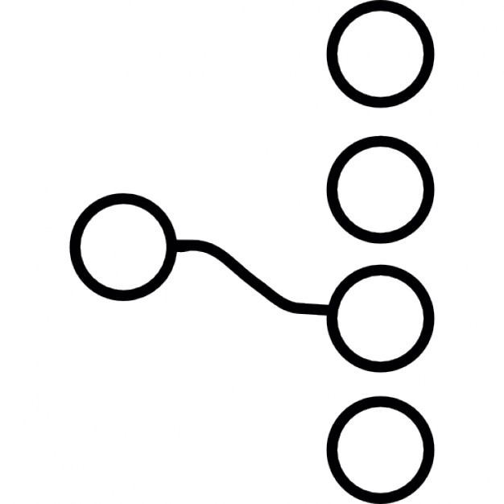

El proposito del software engineering body of knowledge (en adelante SWEBOK) es tener una caracterización validada y consenzuada de los límites de la de la ingeniería de software. En otras palabras, definir formalmente a la ingeniería de software como una profesión y proporcionar un acceso a los temas del cuerpo de conocimiento, recaudado en más de 40 años de literatura respecto al tema, apoyando la diciplina. El cuerpo del conocimiento está dividido en áreas de conocimiento más un capitulo adicional proporcionando una perspectiva general de dichas áreas.
Historia
Desde el año de 1993 hasta el 2000 varias asociaciones cooperaban para profesionalizar la ingeniería de software a través del comité para la coordinación de la ingeniería de software (Software Engineering Coordinating Committee – SWECC). Fue así que El SWEBOK fue iniciado por el SWECC en 1998.
El proyecto SWEBOK crecio con el tiempo. Esto llevo a que las comunidades involucradas necesitáran de una gestion formal de tiempo completo en lugar de los esfuerzos altruistas y voluntarios. Fue entonces que la IEEE Computer Society contrato al laboratorio de investigación de ingeniría de software de la Universidad de Quebec.
El proyecto se dividio en 3 fases: Hombre de Paja, Hombre de Piedra y Hombre de Hierro. Hombre de Paja fue el prototipo que suponía la organización del proyecto. La finalización de Hombre de Piedra legó con la publicación de la version de prueba en el 2001 y la guía del 2004, que es la actual, marcó el fin de la fase Hombre de Hierro.
El enfoqué del SWEBOK
La guia debe ser bien diferenciada del cuerpo de conocimiento en si que no es más que la literatura publicada. El propósito del SWEBOK es describir que parte del conocimiento es generalmente aceptado, organizar esa parte y proporcionar acceso a la información de interés. SWEBOK define los siguientes 5 objetivos:
Objetivos
- Promover una visión consistente de la ingeniería del software en el mundo.
- Clarificar la situación – y definir fronteras – de la ingeniería del software con respecto a otras disciplinas como la informática, gestión de proyectos, ingeniería informática y matemáticas.
- Caracterizar los contenidos de la disciplina de la ingeniería del software
- Proporcionar al cuerpo de conocimiento de la ingeniería del software con los temas de interés
- Proporcionar una base para el desarrollo planes de estudio, certificaciones individuales y materiales para licencias.
El segundo de los objetivos, definición de limites para la ingeniería de software, es la que da la organización del SWEBOK. El material reconocido como perteneciante a la ingeniería de software está organizado en 10 áreas del del conocimiento (AC), sin contar las diciplinas relacionadas, que se enumeran a continuación. Cada área es tratada como un capitulo del SWEBOK.
Areas de conocimiento
- Requerimientos del software
- Diseño del software
- Construcción del software
- Pruebas del software
- Mantenimiento del software
- Gestión de la configuración del software
- Gestión de la ingeniería de software
- Procesos de ingeniería de software
- Métodos y herramientas de la ingeniería de software
- Calidad de software
- Diciplinas relacionadas a la ingeniería de software
El tercer objetivo se cumple al establecer una organización jerárquica para descomponer cada áera del conocimiento en un conjunto de temas catalogados. La extensión de cada tema es la justa pata comprender la naturaleza de los temas y para que se pueda referir a la literatura sin complicaciones. Al final esl cuerpo del conocimiento se encuentra en las referencias y no en la guia en sí misma.